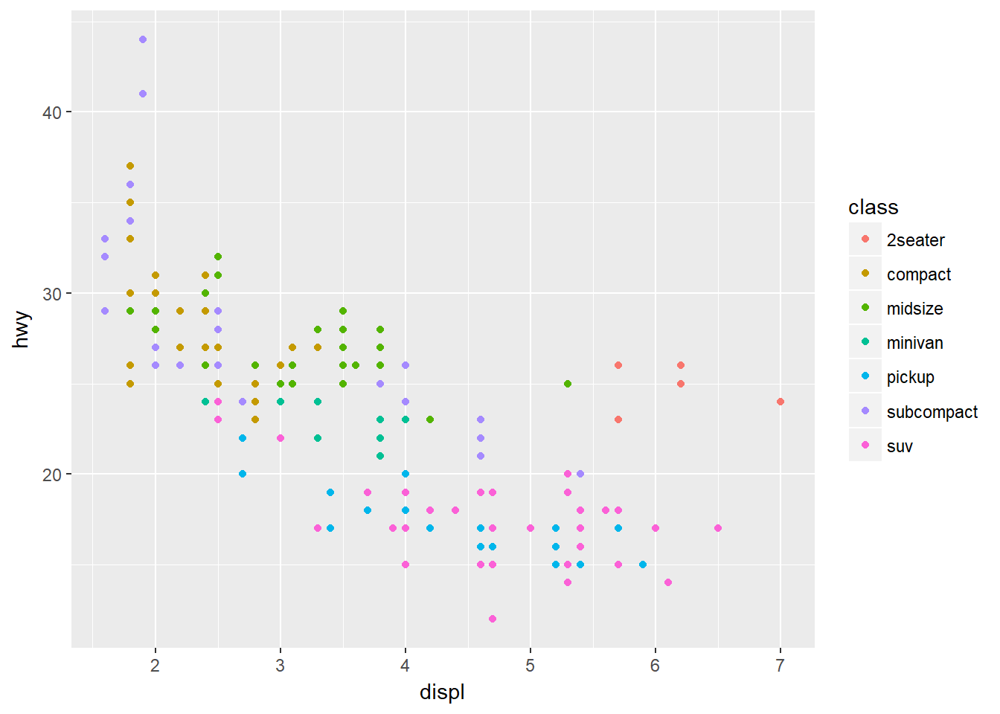
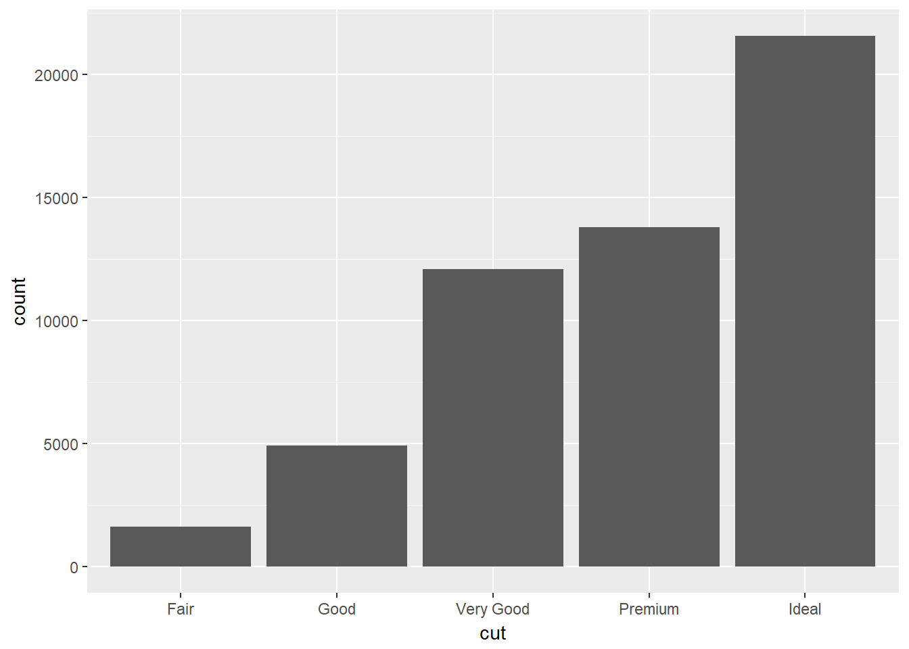
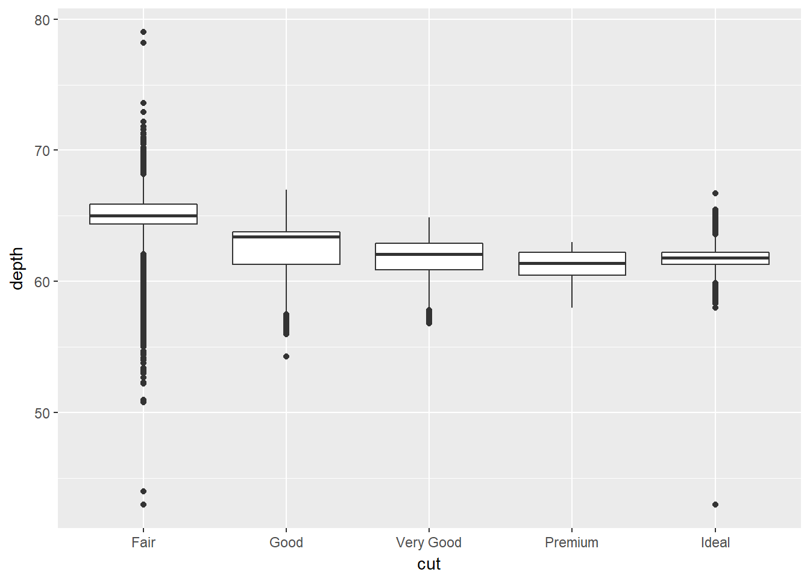

Getting started
Alistair Bailey
Learning Objectives
By the end of this lesson the learner will:
- Have been introduced to ggplot2 for visualisation
- Performed some more object assignments and functions calls.

Data visualisation
Let’s begin with visualisation of some data using the ggplot2 package.
We’re starting here as we gather data to ask and answer questions, and visualising data often provides the answers.
We’re using ggplot2 as this implements the grammer of graphics, for describing and building graphs. This is far from the only way to create graphs, but in this course we’ll be working within the tidyverse, a set of packages that implement a coherent set of tools for data science in R. ggplot2 is a package that is part of the tidyverse package.
We should have the tidyverse installed and loaded already, which means ggplot2 is loaded and ready to go.
Using graphs to explore data
Do cars with big engines use more fuel than cars with small engines?
Included in ggplot2 is a data frame called mpg containing variables in columns and observations in rows collected by the US Environmental Protection Agency for 38 models of cars.
Type mpg in the console window to take a look at this R object:
mpg## # A tibble: 234 × 11
## manufacturer model displ year cyl trans drv cty hwy
## <chr> <chr> <dbl> <int> <int> <chr> <chr> <int> <int>
## 1 audi a4 1.8 1999 4 auto(l5) f 18 29
## 2 audi a4 1.8 1999 4 manual(m5) f 21 29
## 3 audi a4 2.0 2008 4 manual(m6) f 20 31
## 4 audi a4 2.0 2008 4 auto(av) f 21 30
## 5 audi a4 2.8 1999 6 auto(l5) f 16 26
## 6 audi a4 2.8 1999 6 manual(m5) f 18 26
## 7 audi a4 3.1 2008 6 auto(av) f 18 27
## 8 audi a4 quattro 1.8 1999 4 manual(m5) 4 18 26
## 9 audi a4 quattro 1.8 1999 4 auto(l5) 4 16 25
## 10 audi a4 quattro 2.0 2008 4 manual(m6) 4 20 28
## # ... with 224 more rows, and 2 more variables: fl <chr>, class <chr>Try ?mpg to learn more about the data.
- Engine size in litres is in the
displcolumn. - Fuel efficiency on the highway in miles per gallon is given in the
hwycolumn.
To plot engine size (x-axis) against fuel efficiency (y-axis) we do the following:
ggplot(data = mpg) + geom_point(mapping = aes(x=displ, y=hwy))
This plot shows a negative relationship between engine size and fuel efficiency.
What we did here was call the ggplot() function to create an empty graph, where the first argument is the data (here mpg). The we used a geom_point() function to add a layer of points mapping the aesthetics for the x and y axes.
Mapping is always paired to aesthetics aes(). An aesthetic is a visual property of the objects in your plot, such a point size, shape or point colour.
Challenge
Is the trend the same for fuel efficiency in cities?
- Which variable represents city miles per gallon?
- Can you produce a plot of engine size (x-axis) against city fuel efficiency (y-axis) ?
- Is the trend positive or negative between engine size and city fuel efficiency ?
Here we just used the values of x and y as points, but we could add a colour or shape aesthetic too.
But why?
Suppose we also were trying to understand the relationship between the type of car, the engine size and fuel efficiency. To contain all this information in a single plot we need to have a third aesthetic, a third property to describe the car type, contained in the class column.
ggplot(data = mpg) + geom_point(mapping = aes(x=displ, y=hwy, colour=class))
As we might expect, bigger cars such as SUVs tend to have bigger engines and are also less fuel efficient, but some smaller cars such as 2seaters also have big engines and greater fuel efficiency. Hence we have a more nuanced view with this additional aesthetic.
Check out the ggplot2 documentation for all the aesthetic possibilities (and Google for examples): http://ggplot2.tidyverse.org/reference/
So now we have re-usable code snippet for generating plots in R:
ggplot(data = <DATA>) +
<GEOM_FUNCTION>(mapping = aes(<MAPPINGS>))Concretely, in our first example <DATA> was mpg, the <GEOM_FUNCTION> was geom_point() and the arguments we supplies to map our aesthetics <MAPPINGS> were x = displ, y = hwy.
What is the availability of different types of diamond?
Plotting in R can do more than just display raw data, it can transform it at the same time.
Also, we only looked at one type of geometric object, geom_point, last time. Geoms are the type of data display ggplot2 creates e.g. points, box-plots, bar charts. Here we’ll see some of the other geom types.
Let’s look at another built in data frame called diamonds.
diamonds## # A tibble: 53,940 × 10
## carat cut color clarity depth table price x y z
## <dbl> <ord> <ord> <ord> <dbl> <dbl> <int> <dbl> <dbl> <dbl>
## 1 0.23 Ideal E SI2 61.5 55 326 3.95 3.98 2.43
## 2 0.21 Premium E SI1 59.8 61 326 3.89 3.84 2.31
## 3 0.23 Good E VS1 56.9 65 327 4.05 4.07 2.31
## 4 0.29 Premium I VS2 62.4 58 334 4.20 4.23 2.63
## 5 0.31 Good J SI2 63.3 58 335 4.34 4.35 2.75
## 6 0.24 Very Good J VVS2 62.8 57 336 3.94 3.96 2.48
## 7 0.24 Very Good I VVS1 62.3 57 336 3.95 3.98 2.47
## 8 0.26 Very Good H SI1 61.9 55 337 4.07 4.11 2.53
## 9 0.22 Fair E VS2 65.1 61 337 3.87 3.78 2.49
## 10 0.23 Very Good H VS1 59.4 61 338 4.00 4.05 2.39
## # ... with 53,930 more rowsThis data set has records of about 54,000 diamonds, including price (dollars), quality of the cut (cut) and weight (carat).
Let’s create a bar-plot of diamond cut quality using our code snippet:
ggplot(data = diamonds) +
geom_bar(mapping = aes(x=cut))
What’s happened here? Rather than plotting the raw data, ggplot has transformed the data by counting the the number of diamonds in the row of data frame corresponding with each quality.
This statistical transformation of counting the rows is a default of geom_bar(), by reading the help we can find out more ?geom_bar, and how to change it.
We see that ideal cut quality diamonds are most abundant.
The depth measurement describes the relationship of the height to its width as a percentage. Plotting this as a box-plot automatically calculates the the range of depths, and associated statistics for each quality type.
ggplot(data = diamonds) +
geom_boxplot(mapping = aes(x=cut,y=depth))
Challenge
As before, we could apply another aesthetic, colour to also look at the same relationship, but also across the clarity types.
Create a box-plot as before, but add
colour = clarityto the aesthetics mapping
Comparing our bar chart and box plot we can see that diamonds of the greatest abundance are also generally the most uniform in terms of depth and clarity.
We’ll return to plotting later and look at how to make them suitable for publication by performing tasks such as relabelling axes or adding titles.
Hopefully you are beginning to see how a single line of code can do a lot.
Workflow basics
Let’s revisit the basics of working in R to conclude this part of the lesson.
Assigning objects
Objects are just a way to store data inside the R environment. We create objects using the assignment operator <-:
weight_kg <- 55Read this as “weight_kg gets value 55” in your head.
Using <- can be annoying to type, so use RStudio’s keyboard short cut: Alt + - (the minus sign) to make life easier.
Object name style is a matter of choice, but must start with a letter and can only contain letters, numbers, _ and .. We recommend using descriptive names and using _ between words. Some special symbols cannot be used in variable names, so watch out for those.
So here we’ve used the name to indicate its value represents a weight in kilograms. Look in your environment pane and you’ll see the weight_kg object containing the (data) value 55.
We can inspect an object by typing it’s name:
weight_kgWhat’s wrong here?
weight_KGError: object 'weight_KG' not found
This error illustrates that typos matter, everything must be precise and weight_KG is not the same as weight_kg. weight_KG doesn’t exist, hence the error.
Calling functions
Functions in R are objects followed by parentheses, such as library(). Functions have the form:
function_name(arg1 = val, arg2 = val2, ...)
Let’s use seq() to create a sequence of numbers, and at the same time practice tab completion.
Start typing se in the console and you should see a list of functions appear, add q to shorten the list, then use the up and down arrow to highlight the function of interest seq() and hit Tab to select.
RStudio puts the cursor between the parentheses to prompt us to enter some arguments. Here we’ll use 1 as the start and 10 as the end:
seq(1,10)## [1] 1 2 3 4 5 6 7 8 9 10If we left off a parentheses to close the function, then when we hit enter we’ll see a + indicating RStudio is expecting further code. We either add the missing part or press Escape to cancel the code.
Let’s call a function and make an assignment at the same time. Here we’ll use the base R function seq() which takes three arguments: from, to and by.
Read the following code as *“make an object called my_sequence that stores a sequence of numbers from 2 to 20 by intervals of 2*.
my_sequence <- seq(2,20,2)This time nothing was returned to the console, but we now have an object called my_sequence in our environment.
Can you remember how to inspect it?
If we want to subset elements of my_sequence we use square brackets [].
For example element five would be subset by:
my_sequence[5]## [1] 10Here the number five is the index of the vector, not the value of the fifth element. The value of the fifth element is 10.
And returning multiple elements uses a colon :, like so
my_sequence[5:8]## [1] 10 12 14 16Atomic vectors
We actually made an atomic vector already when we made my_sequence. We made a a one dimensional group of numbers, in a sequence from two to twenty.
We’re not going to be working much with atomic vectors in this workshop, but to make you aware of how R stores data, atomic vector types are:
- Doubles: regular numbers, +ve or -ve and with or without decimal places. AKA numerics.
- Integers: whole numbers, specified with an upper-case L, e.g.
int <- 2L - Characters: Strings of text
- Logicals: these store
TRUEs andFALSEs which are useful for comparisons. - Complex: this would be a vector of numbers with imaginary terms.
- Raw: these vectors store raw bytes of data.
Let’s make a character vector and check the type:
cards <- c("ace", "king", "queen", "jack", "ten")
cards## [1] "ace" "king" "queen" "jack" "ten"typeof(cards)## [1] "character"Challenge
What type of vector is
my_sequence?
Attributes
An attribute is a piece of information you can attach to an object, such as names or dimensions. Attributes such as dimensions are added when we create an object, but others such as names can be added.
Let’s look at the mpg data frame dimensions:
# mpg has 234 rows (observations) and 11 columns (variables)
dim(mpg)## [1] 234 11Factors
Factors are Rs way of storing categorical information such as eye colour or car type. A factor is something that can only have certain values.
Factors are useful as they code string variables such as “red” or “blue” to integer values e.g. 1 and 2, which can be used in statistical models and when plotting, but they are confusing as they look like strings.
Factors look like strings, but behave like integers.
Historically R converts strings to factors when we load and create data, but it’s often not what we want as a default. Fortunately, in the tidyverse strings are not treated as factors by default.
Lists
Lists also group data into one dimensional sets of data. The difference being that list group objects instead of individual values, such as several atomic vectors.
For example, let’s make a list containing a vector of numbers and a character vector
list_1 <- list(1:110,"R")
list_1## [[1]]
## [1] 1 2 3 4 5 6 7 8 9 10 11 12 13 14 15 16 17
## [18] 18 19 20 21 22 23 24 25 26 27 28 29 30 31 32 33 34
## [35] 35 36 37 38 39 40 41 42 43 44 45 46 47 48 49 50 51
## [52] 52 53 54 55 56 57 58 59 60 61 62 63 64 65 66 67 68
## [69] 69 70 71 72 73 74 75 76 77 78 79 80 81 82 83 84 85
## [86] 86 87 88 89 90 91 92 93 94 95 96 97 98 99 100 101 102
## [103] 103 104 105 106 107 108 109 110
##
## [[2]]
## [1] "R"Note the double brackets to indicate the list elements, i.e. element one is the vector of numbers and element two is a vector of a single character.
Challenge
Make a list from our vectors
my_sequenceandcards
We won’t be working with lists in this workshop, but they are a flexible way to store data of different types in R.
Accessing list elements uses double square brackets syntax, for example list_1[[1]] would return the first vector in our list.
And to access the first element in the first vector would combine double and single square brackets like so: list_1[[1]][1].
Don’t worry if you find this confusing, everyone does when they first start with R.
Matrices and arrays
Matrices store values in a two dimensional array, whilst arrays can have n dimensions. We won’t be using these either, but they are also valid R objects.
Data frames
Data frames are two dimensional versions of lists, and this is form of storing data we are going to be using. In a data frame each atomic vector type becomes a column, and a data frame is formed by columns of vectors of the same length. Each column element must be of the same type, but the column types can vary.

Let’s create a data frame like the one in the picture and call it df.
To access a column in a data frame we use the data frame name followed by a $ and the name of the column. For example df$number returns all the values in the number column of df
# Note here we have to use StringsAsFactors = FALSE to create a character column
df <- data.frame(number = c(1,7,3),
char = c("S","A","U"),
logi = c(TRUE,FALSE,TRUE),
stringsAsFactors = FALSE)
df## number char logi
## 1 1 S TRUE
## 2 7 A FALSE
## 3 3 U TRUE# str shows us the structure of the data frame
str(df)## 'data.frame': 3 obs. of 3 variables:
## $ number: num 1 7 3
## $ char : chr "S" "A" "U"
## $ logi : logi TRUE FALSE TRUE# Show the contents of the number column
df$number## [1] 1 7 3We’ll be working with a modified form of data frame called a tibble. One advantage of tibbles is that they don’t default to treating strings as factors. We deal with modifying data frames when we work with our example data set.
Sub-setting data frames can also be done with square bracket syntax, but as we have both rows and columns, we need to provide index values for both row and column.
For example df[1,2] means return the value of df row 1, column 2. This corresponds with the value A.
We can also use the colon operator to choose several rows or columns, and by leaving the row or column blank we return all rows or all columns.
# Subset rows 1 and 2 of column 1
df[1:2,1]## [1] 1 7# Subset all rows of column 3
df[,3]## [1] TRUE FALSE TRUEAgain don’t worry too much about this for now, we won’t be doing to much of this in this lesson, but it’s important to be aware of the basic syntax.
Challenge
Make a data frame from our vectors
my_sequenceandcardsand a logical vector.We’ll use the first five elements of
my_sequence.Hint: Subset the first five elements using
my_sequence[1:5]Hint: Use the form
c(TRUE, FALSE)to create the logical vector.Hint: Name the columns as in the example.
Learning more R
There are many places to start, but swirl can teach you interactively, and at your own pace in RStudio.
Just follow the instructions via this link: http://swirlstats.com/students.html
Hands-On Programming with R by Garrett Grolemund is another great resource for learning R.
Data Carpentry, 2017.
License. Questions? Feedback?
Please file
an issue on GitHub.
On Twitter: @datacarpentry